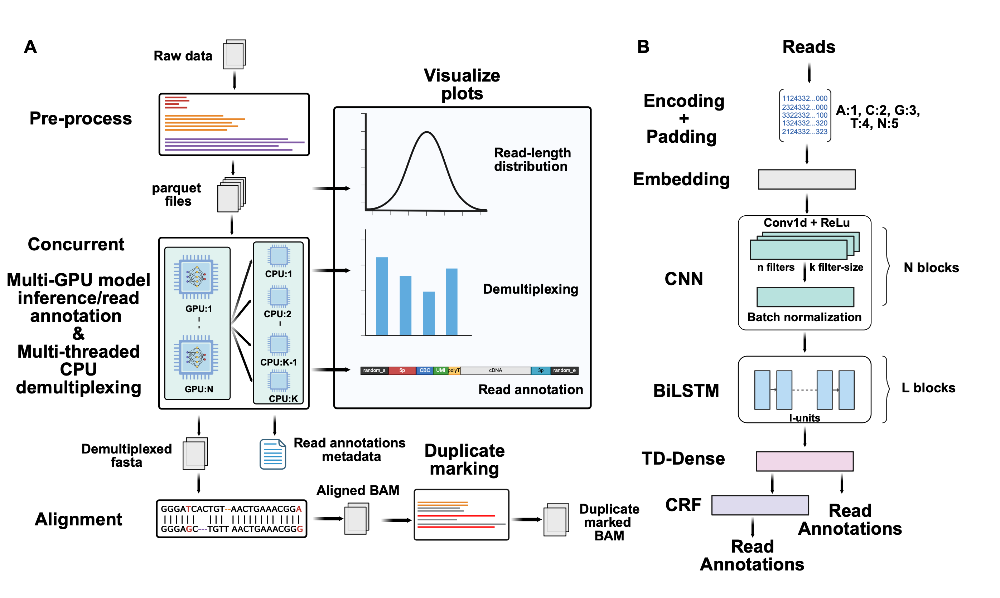

Tranquillyzer Overview
PLEASE BE AWARE THAT THIS WEBSITE IS UNDER ACTIVE DEVELOPMENT AND MAY CHANGE DRASTICALLY FROM DAY TO DAY. IF YOU NEED A MORE STABLE VERSION PLEASE CHECK BACK IN A MONTH.
Tranquillyzer (TRANscript QUantification In Long reads-anaLYZER) is a flexible, architecture-aware deep learning framework for processing long-read single-cell RNA-seq (scRNA-seq) data. It employs a hybrid neural network architecture and a global, context-aware design that enables the precise identification of structural elements. In addition to supporting established single-cell protocols (e.g., the 10x Chromium Single Cell 3’ Gene Expression protocol), Tranquillyzer accommodates custom library formats through rapid, one-time model training on user-defined label schemas. Model training for both established and custom protocols can be typically completed within a few hours on standard GPUs.
For a detailed description of the framework, benchmarking results, and application to real datasets, please refer to the preprint.
Citation
bioRxiv
Tranquillyzer: A Flexible Neural Network Framework for Structural Annotation and
Demultiplexing of Long-Read Transcriptomes. Ayush Semwal, Jacob Morrison, Ian
Beddows, Theron Palmer, Mary F. Majewski, H. Josh Jang, Benjamin K. Johnson, Hui
Shen. bioRxiv 2025.07.25.666829; doi: https://doi.org/10.1101/2025.07.25.666829.Quick Start
For a guide to getting started with Tranquillyzer, see the Quick Start guide.
Installation
Tranquillyzer is available through a variety of methods. See the Installation page for details.
Overview of Tranquillyzer

Preprocessing
Tranquillyzer implements a parallelized binning strategy that sorts reads into discrete bins based on their length (e.g., 0-499 bp, 500-999 bp, and so on) and then writes each bin to its own Parquet file. This strategy ensures that reads of similar lengths are group together, minimizing unnecessary padding and optimizing GPU memory consumption. In parallel, Tranquillyzer generates a lightweight index that maps each read to its corresponding bin. This index enables rapid retrieval of individual reads for targeted visualization or debugging via the visualize subcommand and eliminates reloading the full dataset.
Read Annotation and Demultiplexing
Reads are annotated in batches pulled from the Parquet files of similarly-sized reads generated during preprocessing. For each file, the batch size is dynamically scaled based on the average read length to balance memory usage and throughput. Once batched and encoded (i.e., converting A/C/G/T/N bases into numeric values), reads are passed through the trained model to infer base-wise label sequences to enable the identification of key structural components such as adapters, cell barcodes (CBCs), unique molecular identifiers (UMIs), cDNA regions, and polyA/T tails.
Model inference is distributed across all available GPU cores to process batches concurrently across devices. As each batch completes the inference phase, its predictions are offloaded to a pool of CPU threads, configured via a user-defined threads parameter, for postprocessing. This stage includes label decoding, structural validation, barcode correction, and demultiplexing. From the per-base annotations, continguous regions are aggregated to identify structural components within each read (e.g., adapters, CBCs/UMIs, or RNA inserts). The structural validity of each read is assessed by comparing the predicted order against a protocol-specific label sequence defined in a tab-delimited text file. Reads that conform to the expected structure are marked as valid; those that do not are flagged as invalid.
For structurally valid reads, annotated barcodes are compared against a provided whitelist using the Levenshtein edit distance (ED). Reads with a unique match within a user-defined threshold (default: ED <= 2) are assigned the corresponding barcode, while those that fail to match or yield multiple equally close matches are labeled as ambiguous. In parallel, RNA insert sequences from structurally valid reads with successfully assigned barcodes are written demuxed.fasta file, with the corrected CBC embedded in the FASTA header for compatibility with downstream alignment and quantification pipelines. Reads with a valid structural layout but no confidently assigned barcode are instead saved to ambiguous.fasta for further inspection and/or potential rescue.
Duplicate Marking
The successfully demultiplexed reads (i.e., those in demuxed.fasta) are next aligned to a user-specified reference genome using minimap2 with spliced alignment settings. Mapped reads are coordinate-sorted into an output BAM file, while unmapped reads are discarded. To perform duplicate marking, reads with similar start and end genomic positions and identical strand orientation and cell barcode are compared for UMI similarity. Reads with similar UMIs (have an ED <= a user-defined threshold) are defined as duplicates. One read is retained as the “original” read, and the other reads are marked as duplicate reads by setting standard SAM auxiliary tags and applying the “read is PCR or optical duplicate” flag. The filters used to define duplicates are configurable so users may relax or tighten these constraints depending on their experimental design or tolerance for false positives.
Deduplication is done in parallel across genomic regions. Temporary BAM files are generated for each genomic region and then merged into final duplicate-marked output BAM once each region has been processed. The output file can then be post-processed using tools such as samtools for downstream filtering and analysis.
Visualization
Tranquillyzer produces detailed, color-coded visualizations of read annotations. These figures label individual structural elements such as adapter sequences, polyA/T tails, cell barcodes, UMIs, and cDNA regions to quickly explore a read’s architecture.
Issues
Issues can be opened on GitHub: https://github.com/huishenlab/tranquillyzer/issues.
Acknowledgements
- This work is supported by National Institutes of Health grant UM1DA058219.
Disclosure of AI-Assisted Development
This project incorporates contributions produced with the assistance of AI-based software development tools. These tools were used for ideation, code generation, debugging, and documentation support. Final implementations were made by the authors, and all code has undergone manual review and testing. The project authors assumes full responsibility for the accuracy, integrity, and licensing compliance of all included code.